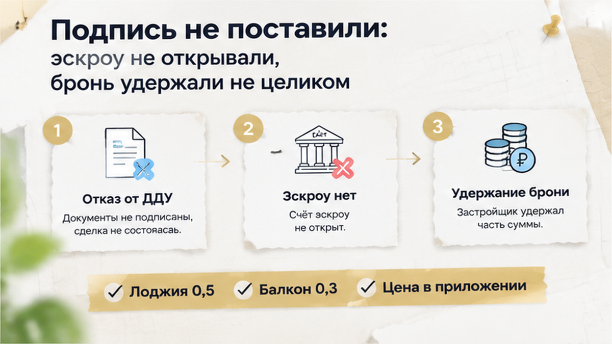
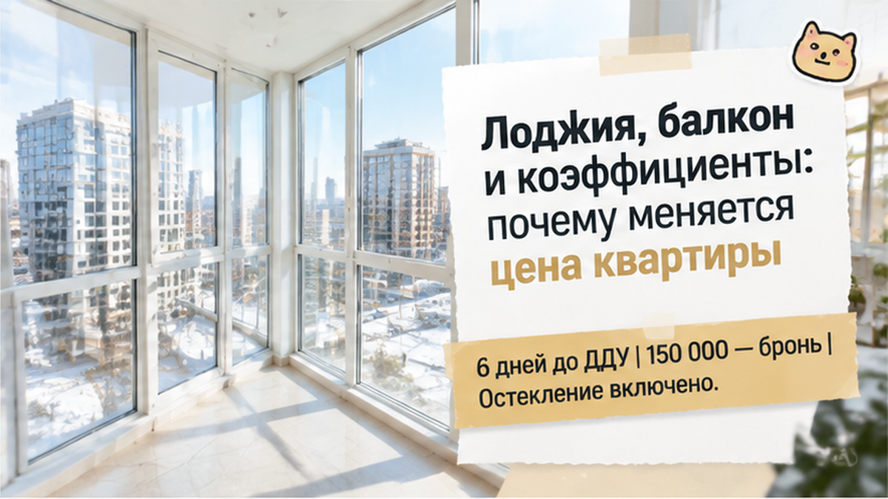
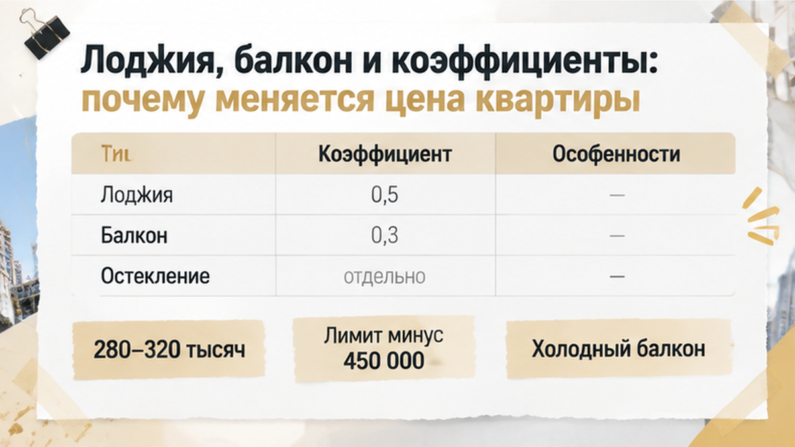

За шесть дней до подписания договора на трёшку в новостройке Тюмени семья узнала: обещанная остеклённая лоджия в нём превратилась в холодный балкон, а ипотека после пересчёта перестала сходиться. Банк снизил одобренную сумму примерно на 450 тысяч рублей — эту разницу теперь предстояло закрывать своими деньгами. В офисе перед покупателями лежали бронь с отметкой «остекление включено» и приложение к договору, где остекления уже не было. За бронирование внесли около 150 тысяч, поэтому отложить бумаги и уйти означало ещё и разбираться с возвратом. Семья готовилась покупать выбранную квартиру, а перед подписью получила другие условия и вопрос: сколько ещё придётся добавить?
Если присматриваете новостройку в Тюмени, подписывайтесь на мой Telegram и MAX. Рассказываю изнутри, где обещание при выборе квартиры расходится с бумагами на сделку. Не чтобы отбить желание покупать, а чтобы такие расхождения вы замечали до подписи и перевода денег.
На этапе выбора всё совпадало. На стенде и планировке — лоджия с остеклением, в соглашении о бронировании — отдельная отметка, что оно включено. Семья брала трёшку для себя, по семейной ипотеке, и считала расходы именно на такую квартиру. Откладывать ещё деньги на стёкла никто не собирался: их не просто показали на картинке, их записали в бумаге.
Покупателей здесь легко понять. Они выбрали квартиру, закрепили условия, заплатили за бронь — значит, дальше должны получить договор на то, о чём договорились. Бронь для них подтверждала не только номер квартиры, но и её комплектацию. Иначе зачем вообще нужна отметка «включено», если перед сделкой за то же самое попросят отдельную плату?
Но бронь и договор с застройщиком — разные документы. ДДУ — это договор участия в долевом строительстве: в нём и приложениях должно быть записано, какую квартиру вам передадут. Обещание из брони нужно перенести туда, а не оставить жить отдельно от покупки. В разборе про обещанную чистовую отделку и голые стены на приёмке несоответствие обнаружилось уже при передаче квартиры. Здесь возможность сравнить бумаги появилась раньше.
В приложении оказался холодный неостеклённый балкон. Это не потерянная запятая: другое название помещения и другая комплектация. Семья выбирала вариант со стеклом, а подписать ей предлагали вариант без него. Если согласиться с этой бумагой, прежняя отметка в брони сама по себе её не исправит.
Остекление предлагалось отдельно, примерно за 280–320 тысяч рублей. То, что покупатели уже считали оплаченным в составе квартиры, стало самостоятельным расходом. При этом и первоначальное обещание не означало тёплую комнату: остекление — не утепление. Готовый кабинет на лоджии зимой семье никто не обещал, но даже заявленных стёкол в описании квартиры теперь не было.
Поэтому сначала требовалось разобраться с самим договором. Не подписать как есть и надеяться, что потом вспомнят бронь, а получить описание той квартиры, за которую семья соглашалась платить. Дата сделки близко, но от этого разница между «включено» и «оплатите отдельно» никуда не исчезает. Торопиться здесь означало принимать дополнительный расход, которого в исходном расчёте не было.
Следом пришлось проверять ипотеку. Для семейного бюджета квартира и нужное остекление — одна покупка, а для банка стоимость объекта и отдельные работы не обязательно складываются в одну сумму кредита. Прежнее одобрение давали под прежний расчёт. Теперь нужно было понять, сколько банк готов выдать по окончательным документам и сколько своих денег останется добавить.
После пересчёта банк уменьшил одобренную сумму примерно на 450 тысяч рублей. Для семьи это означало простую вещь: недостающие деньги придётся добавить самим. Квартира от этого не стала дешевле, а остекление в её комплектацию не вернулось. Получилась неприятная вилка: кредит меньше, собственные расходы больше, и за прежний бюджет покупатели уже не получали то, что выбрали.
Семейная ипотека эту дыру не закрывала. Подходить под условия программы — одно, получить нужную сумму на конкретную квартиру — другое. Банк пересмотрел расчёт, и прежнее одобрение больше не помогало свести покупку. Опираться на него как на обещание выдать деньги при любых изменениях в документах было нельзя.
Если прибавить отдельное остекление за 280–320 тысяч, семье требовалось найти ещё примерно 730–770 тысяч рублей собственных денег. Не обязательно принести их все в день подписания: часть закрывала нехватку кредита, часть понадобилась бы на работы. Но разнести расходы по времени — не значит убрать их из бюджета. Отдельный договор на остекление после покупки обычно в ипотеку не входит, поэтому оставить эту трату на «потом разберёмся» не получалось.
При этом нет правила, по которому любой холодный балкон автоматически уменьшает ипотеку на определённый процент. Здесь банк принял такое решение по этой квартире; у другого кредитора расчёт мог оказаться другим. Балкон и лоджия не входят в общую площадь жилья, но могут влиять на рыночную оценку квартиры. Поэтому выводить из этой истории универсальную банковскую формулу не стоит.
Похожий момент разбирал в истории, где перед ДДУ изменились условия финансирования: выбранная квартира ещё не означает, что сделка складывается по деньгам. Здесь нужно было заново оценить всю покупку, а не только решить, нужен ли семье стеклопакет на балконе. Согласиться на отдельные работы было мало — оставалась нехватка кредита. И платить за оба изменения предстояло покупателям.

Семья отказалась подписывать договор с застройщиком. Принимать изменившиеся условия только потому, что квартира уже выбрана и бронь оплачена, покупатели не стали. Счёт эскроу — специальный счёт для оплаты квартиры — не открывали, деньги за саму квартиру туда не перечисляли. Сделку остановили до подписи, а не после, когда пришлось бы добиваться другого результата по уже заключённому договору.
Но выйти совсем без потерь не удалось. Из примерно 150 тысяч рублей, внесённых за бронь, часть удержали по условиям соглашения. Полного возврата не было, но и всю сумму семья не потеряла. Бронь — отдельный платёж: он не получает защиту эскроу просто потому, что внесён при покупке новостройки.
Запись «остекление включено» подтверждала, что покупателям обещали, но сама по себе не исправляла приложение к ДДУ. Семья не стала подписывать одно в надежде позже добиться другого. В итоге квартиру не купили и потеряли часть брони — приятным такой выход не назовёшь. Зато обязательство оплатить покупку на новых условиях на себя не взяли.
Если в брони лоджия «с остеклением», а в ДДУ — холодный балкон: доплачиваете из своих или рвёте сделку?
В такой ситуации я бы начал не с разговора «ну вы же обещали», а с трёх документов рядом: брони, проекта договора с застройщиком и приложения к нему. На плане ищем свою лоджию или балкон, в описании — что именно передадут вместе с квартирой. Есть ли остекление, входит ли оно в цену, не вынесено ли в отдельную покупку. Нужно, чтобы бумаги совпали до подписи, а не чтобы менеджер убедительно объяснил, почему они разные.
У застройщика есть ещё проектная декларация — сведения о том, что он строит; найти её можно на наш.дом.рф. Договор должен соответствовать ей на момент заключения, а его приложение — показывать в том числе балконы и лоджии, их количество и площадь. Покупателю не нужно учить закон наизусть, чтобы заметить несовпадение. Но ответ «на плане просто иначе назвали» не заменяет исправленный документ, если меняется то, за что вы платите.
Если работы предлагают отдельно, нужны их состав, цена и источник денег: отдельное остекление после покупки обычно не входит в ипотеку. Окончательные документы на квартиру стоит передать банку и подтвердить доступную сумму, прежде чем соглашаться на сделку. Похожую границу между обещанным и записанным разбирал в истории с газом под Тюменью: в брони один срок, в документах проекта другой. Смысл проверки не в том, чтобы найти повод отказаться, а в том, чтобы понимать свою покупку.
С метрами здесь легко запутаться: цена по договору, общая площадь жилья и оценка банка — разные расчёты. Для расчёта приведённой площади у лоджии коэффициент 0,5, у балкона — 0,3: проще говоря, их метры учитывают с разным весом. В общую площадь жилья ни то ни другое не входит. Но вывести из этих коэффициентов готовую скидку или новый размер ипотеки нельзя — нужно смотреть конкретный договор и банковский расчёт.
И ещё одна бытовая разница: остеклённая лоджия — не обещание тёплой комнаты. Стекло само по себе не превращает её в зимний кабинет или место для детских занятий. Поэтому важны не только название на картинке и красивый ежемесячный платёж, но и то, что достанется вам за эту сумму. Всё, что потребуется доделывать отдельно, остаётся расходом покупателя, даже если о нём неудобно говорить перед назначенной подписью.
Потерянную часть брони эта проверка не вернула, и хорошим исходом без оговорок такой отказ не назовёшь. Зато до эскроу дело не дошло: покупатели увидели расхождение, пока ещё могли не принимать новые условия. Выбранный этаж и мысленно расставленная мебель не обязывают соглашаться на другую комплектацию. Можно остановиться, сверить план с договором и только после этого решать, подходит ли квартира по-настоящему.
В Telegram и MAX разбираю покупку новостроек изнутри: где обещание осталось на картинке, а расход уже перешёл к покупателю. Подписывайтесь, если выбираете квартиру и хотите разобраться до перевода денег.


Выбираете новостройку в Тюмени — подключусь до брони. Присылайте планировку, проект договора и расчёт ипотеки в Telegram или MAX, либо звоните: +7 922 001 65 05. Посмотрим их вместе, чтобы обещанная квартира совпадала с покупкой на бумаге. Другие разборы — в блоге.